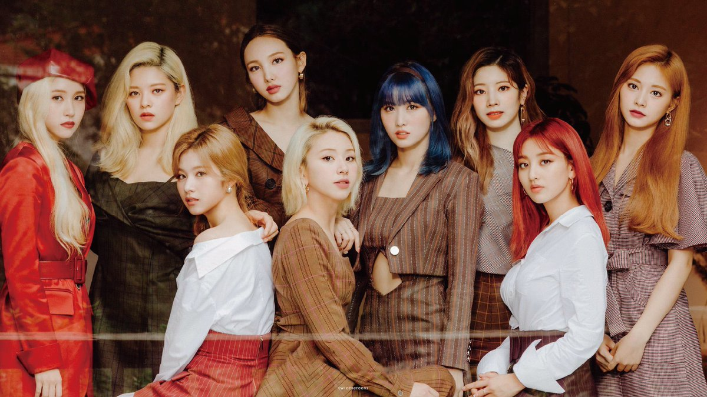
TWICE
Twice (Korean: 트와이스; Japanese: トゥワイス), commonly stylized as TWICE, is a South Korean girl group formed by JYP Entertainment. Twice was formed under the television program Sixteen (2015) and debuted on October 20, 2015, with the extended play (EP) The Story Begins. Through the survival show Sixteen, under JYP Entertainment. As of February 2020, JYPE is partnering with Republic Records to help promote TWICE worldwide.
Members
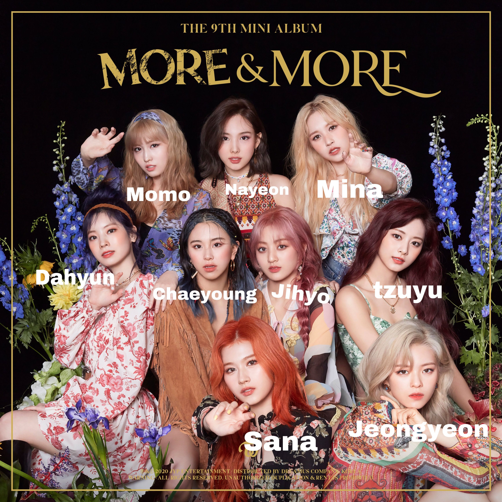
TWICE (트와이스) is a girl group consisting of 9 members: Jihyo, Nayeon, Jeongyeon, Momo, Sana, Mina, Dahyun, Chaeyoung, and Tzuyu.
Why are they called TWICE?
Twice’s name refers to the act making an impact “once through the ears and once through the eyes.” The group’s rise to fame has been propelled by consecutive hits that have a vibrant sound delivered through bright, multicolored music videos.
They have a dedicated fan base. A follower of the girl group is called “Once.” The members explained the meaning on social media in 2015: “If you love us even once, we will repay your love with twice of our love.”
History and Discography
- October 20, 2015 - The Story begins
- April 25, 2016 - Page Two
- October 24, 2016 - TWICEcoster: Lane 1
- February 20, 2017 - TWICEcoster: Lane 2
- February 24, 2017 - What's TWICE?
- May 15, 2017 - Signal
- June 28, 2017 - #TWICE
- October 18, 2017 - One More Time
- October 30, 2017 - Twicetagram
- December 11, 2017 - Merry & Happy
- February 7, 2018 - Candy Pop
- April 9, 2018 - What is Love?
- May 16, 2018 - Wake Me Up
- June 15, 2018 - I Want You Back
- July 9, 2018 - Summer Nights
- September 12, 2018 - BDZ
- October 22, 2018 - Stay By My Side
- November 5, 2018 - YES or YES
- December 12, 2018 - The Year of "YES"
- December 26, 2018 - BDZ ~Repackage~
- March 6, 2019 - #TWICE2
- April 22, 2019 - Fancy You
- July 17, 2019 - Happy Happy
- July 17, 2019 - Breakthrough
- September 23, 2019 - Feel Special
- October 18, 2019 - &TWICE
- June 1, 2020 - More & More
- July 8, 2020 - Fanfare
- August 21, 2020 - MORE & MORE (English Ver.)
- September 16, 2020 - #TWICE3
- October 26, 2020 - Eyes Wide Open
- November 30, 2020 - I Can’t Stop Me (English Ver.)
Twice Music Videos
GALLERY
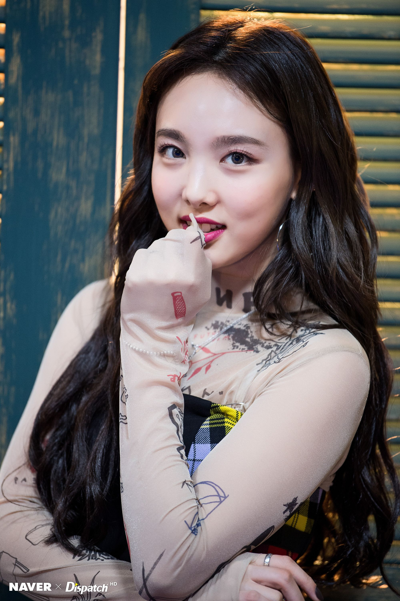
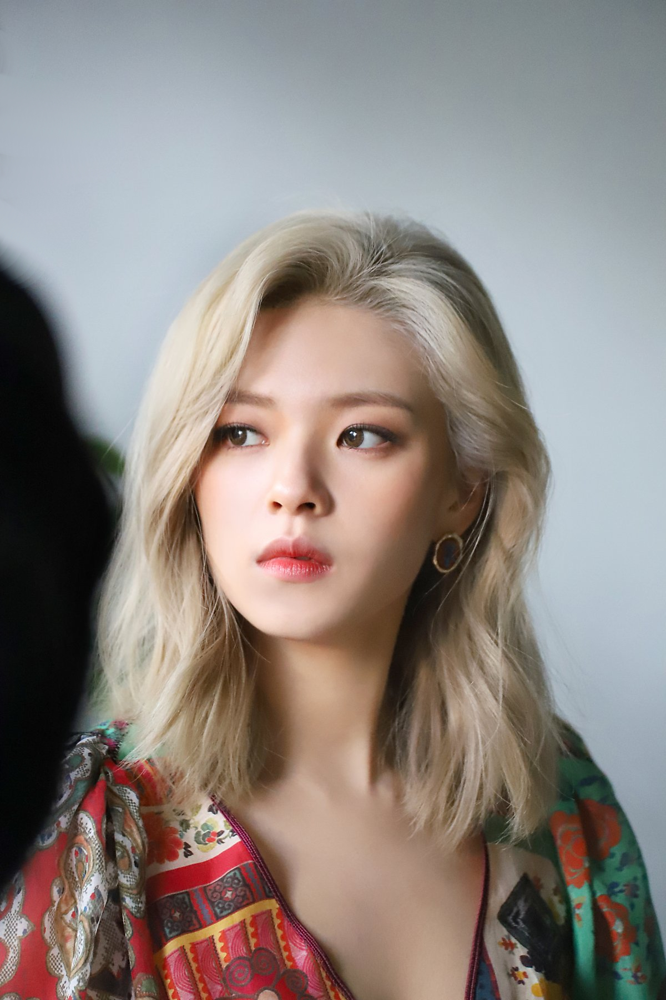
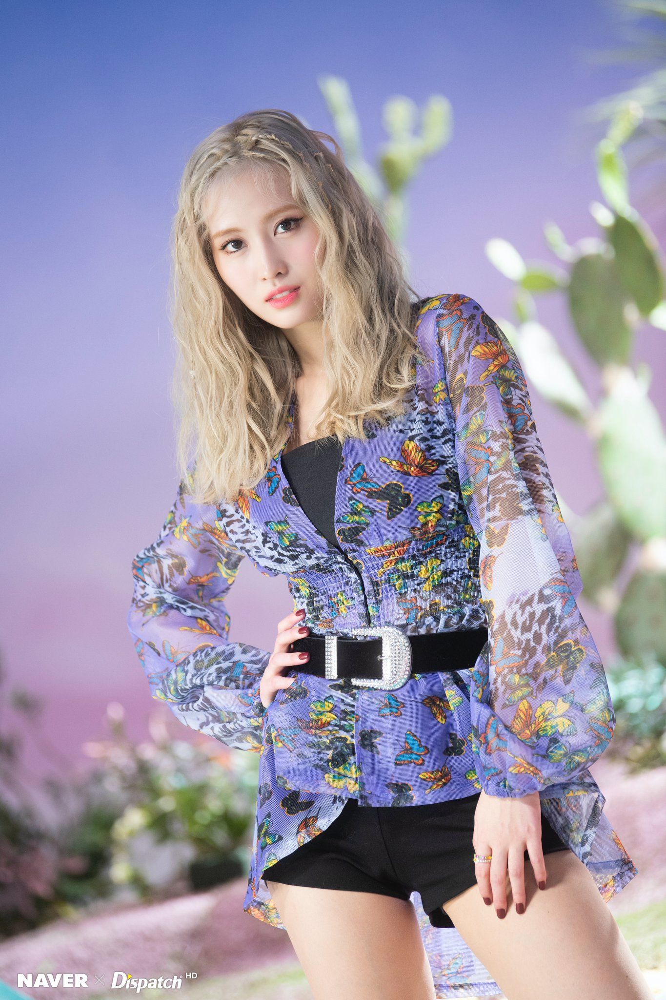
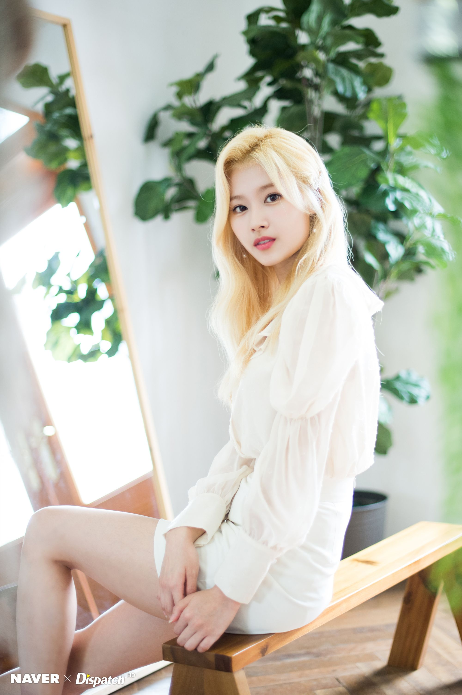
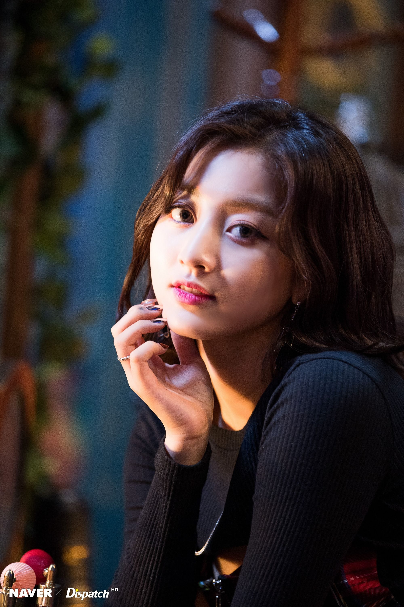
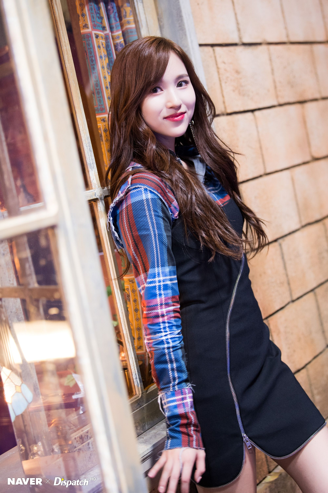
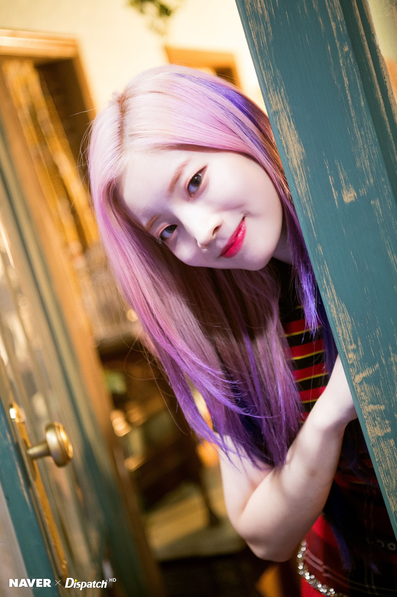
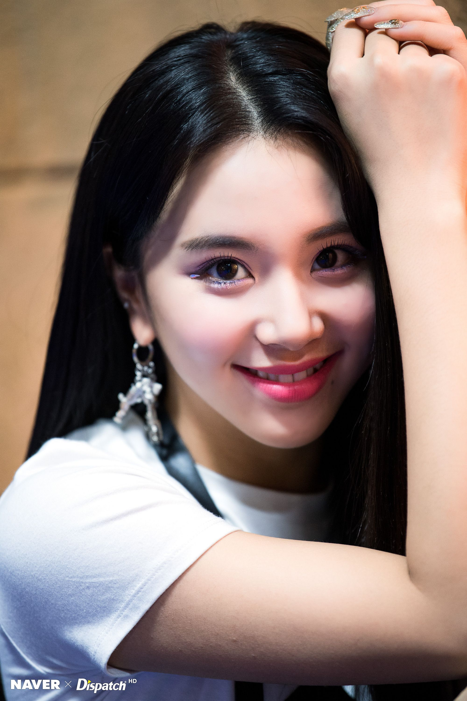
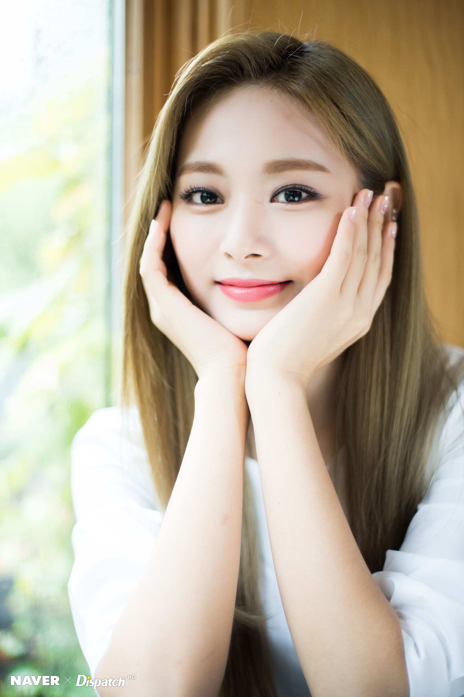
Visit JYP Entertainment
Also Visit KProfiles - Kpop & K Celebrity Profiles